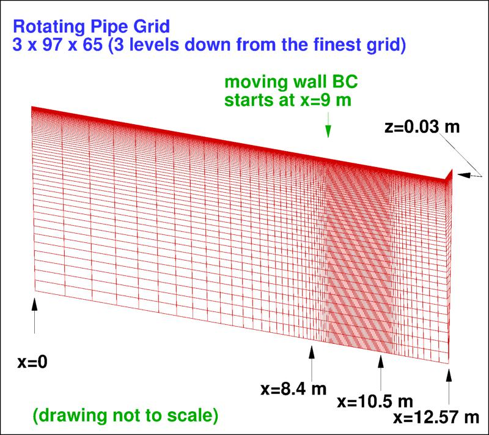

Public Access (formerly Langley Research Center)Turbulence Modeling Resource |
 This page under construction... Come back later!
This page under construction... Come back later!
Return to: Axisymmetric Rotating Pipe Case Intro Page
Return to: Turbulence Modeling Resource Home Page
Grids - Axisymmetric Rotating Pipe Case
A series of 5 nested grids, in units of meters,
are provided. All grid files have been gzipped.
Each coarser grid is exactly every-other-point
of the next finer grid, ranging from the finest 17 x 769 x 513
to the coarsest 2 x 49 x 33 grid.
The minimum grid spacing at the wall on the finest grid is 8 x 10-5 m, yielding an
approximate average minimum y+ of about 0.1.
At the axis, the grid points are placed at r = 0, forming
a singular (pole) there.
The following figure shows a portion of
the 3 x 97 x 65 grid (3 levels down from the finest grid). The grid
is not drawn to scale.

Note: be sure to use double precision when reading the grids!
STRUCTURED VERSIONS OF
GRIDS
A Fortran grid generation program to create structured grids is provided here:
PLOT3D Files
The structured PLOT3D grids are given only as 3-D
axisymmetric grids (multiple planes with total rotation through 5 deg. Note that in the grids,
"z" is "up", and "y" is in the circumferential direction; this is different than in the
experiment, and must be properly accounted for when extracting the data for comparison.
Also note that the grids provided below have (for example) idim=17, jdim=769, kdim=513.
In other words, idim is in the y-direction, jdim is in the x-direction, and kdim is in the z-direction.
This orientation is similar to other structured grids used on the TMR website.
For convenience, the Fortran program provided above was altered so that the idim and jdim directions are switched
(idim is in the x-direction, jdim is in the y-direction, and kdim is in the z-direction).
Format for the structured 3D grid is PLOT3D-type,
formatted, MG, 3D (nbl=1) - note that you
must use double precision when reading! :
read(2,*) nbl
read(2,*) (idim(n),jdim(n),kdim(n),n=1,nbl)
do n=1,nbl
read(2,*) (((x(i,j,k,n),i=1,idim(n)),j=1,jdim(n)),k=1,kdim(n)),
+ (((y(i,j,k,n),i=1,idim(n)),j=1,jdim(n)),k=1,kdim(n)),
+ (((z(i,j,k,n),i=1,idim(n)),j=1,jdim(n)),k=1,kdim(n))
enddo
Download the 3-D version of the grids in PLOT3D format here:
If desired, example Neutral Map Files associated with 3-D version of the grids are given here (these files specify grid indices associated with each boundary condition - see The Neutral Map File):
DIFFERENT Temporary Unstructured 3-D Grid
A one-off 3-D unstructured grid was created spanning 20 degrees. This grid was created by John Stokes (ANSYS) for a particular study that has not been published. There is currently no grid sequence associated with this special grid. The grid has 258,014 nodes, and is a mix of hex cells (outer part) and prism cells (near center of pipe). The structured part of the grid has 19 grid points spanwise (covering the 20 degrees); however, they are not uniformly spaced. It is provided in 2 formats: CGNS and UGRID. Large files have been gzipped.
Return to: Axisymmetric Rotating Pipe Case Intro Page
Return to: Turbulence Modeling Resource Home Page
Page Curators: Christopher Rumsey,
Ethan Vogel,
Clark Pederson
Last Updated: 05/10/2022